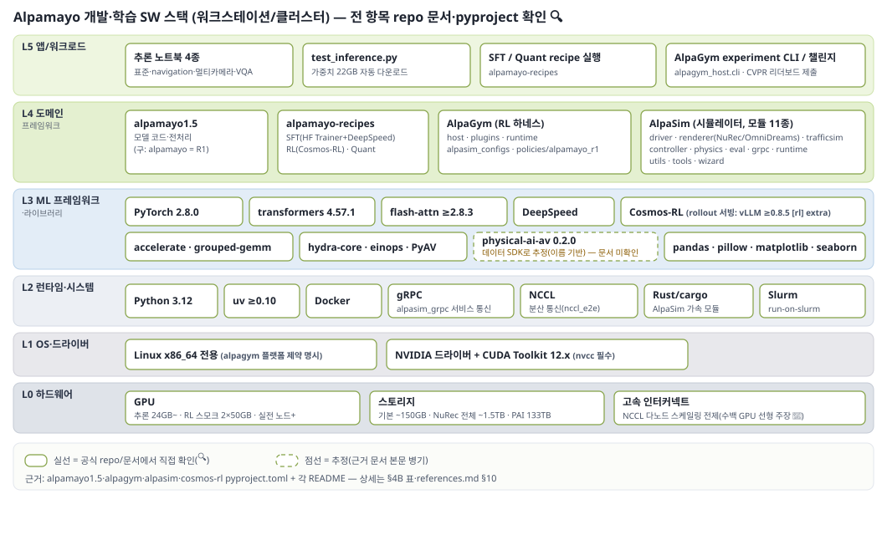
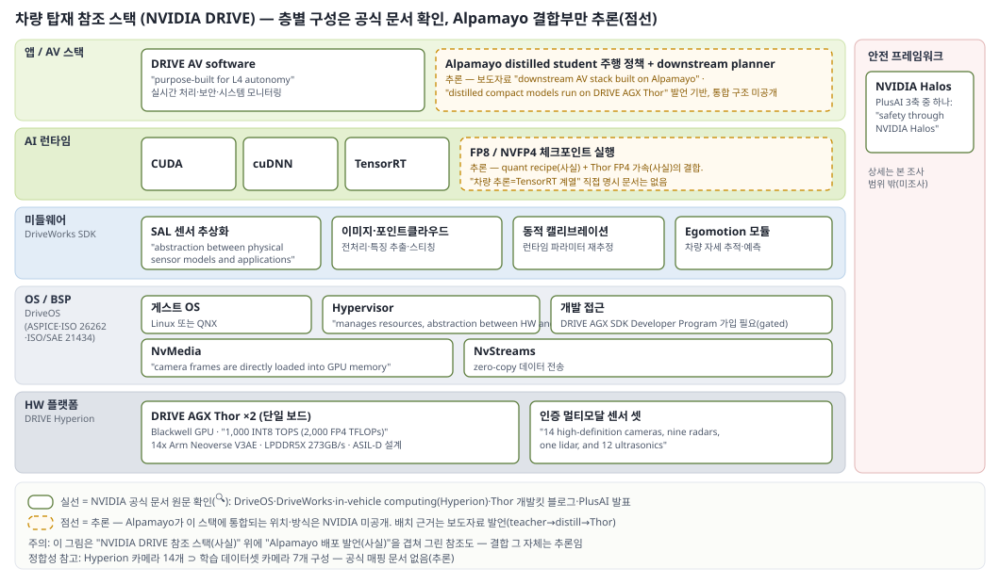

⚠️ Alpamayo 2 Super는 미공개(여름 예정) — 아래는 전부 1.5(현행 공개판) 기준 . 2 Super 공개 시 갱신 필요.
0. 한눈 요약
목적 최소 HW 한 줄 핵심 SW 난이도 체감 ① 추론 체험 NVIDIA GPU 24GB VRAM 1장 + 디스크 ~30GB uv + PyTorch + HF gated 승인 낮음 — 노트북 따라하기 ② 파인튜닝(SFT) 다GPU 권장(수치 미공표 — recipe별 README 확인) alpamayo-recipes (HF Trainer + DeepSpeed) 중간 ③ closed-loop RL GPU 2장(각 ≥40–50GB) 스모크 / 실전 노드 단위 + 씬 ~1.5TBAlpaGym = AlpaSim + Cosmos-RL(GRPO) 높음 — 분산 인프라 ④ 차량 배포 타깃: DRIVE AGX Thor (Blackwell, 2,000 FP4 TFLOPS) quantization recipe(FP8/NVFP4) + distillation(공식 recipe 미출시) 높음 — 파트너 트랙
공통 관문:
HF gated 승인 2건 —
모델 ·
데이터셋 각각 계정+약관 동의. (🔍
1.5 repo ·
데이터셋 카드 )
라이선스: 코드 전부
Apache 2.0 / 가중치
non-commercial (상업 별도 요청) / 데이터셋
NVIDIA AV Dataset License (AV 용도 한정, 재배포·감시 금지).
1. 공통 준비물
항목 내용 근거 OS/드라이버 Linux + CUDA Toolkit 12.x (nvcc) 🔍 1.5 repo Python 3.12 🔍 1.5 repo 패키지 관리 uv — Alpamayo/AlpaSim/AlpaGym 공통🔍 1.5 · alpagym 계정 HF 계정 + hf auth login + gated 승인(모델·데이터셋) 🔍 1.5 repo 컨테이너 Docker (AlpaSim/AlpaGym 서비스) 🔍 alpasim 참고 flash-attention 빌드 실패 시 attn_implementation="sdpa" 🔍 1.5 repo
2. ① 추론 체험 — "모델이 뭘 하는지 눈으로 확인"
SW
repo: NVlabs/alpamayo1.5 (Apache 2.0). src/alpamayo1_5/test_inference.py — 예제 데이터+가중치(22GB ) 자동 다운로드. (🔍)
노트북 4종: 표준 추론 / navigation guidance / 멀티카메라 변형 / VQA . (🔍)
구모델(1)은 NVlabs/alpamayo — navigation·RL 없는 구버전. 신규 시작은 1.5 권장(공식 권장 🔍).
HW (공식 수치, H100 80GB 테스트)
작업 VRAM 근거 단일 샘플 추론 ~24 GB 🔍 1.5 repo 16샘플 배치 ~40 GB 🔍 동일 16샘플 + CFG ~60 GB 🔍 동일 디스크 가중치 22GB + 예제 → 여유 ~30GB+ 🔍 동일
해석: RTX 3090/4090(24GB)로 단일 샘플 데모 가능 — Alpamayo 1 repo 최소선("≥24 GB VRAM, e.g., RTX 3090, RTX 4090, A5000, H100" 🔍 GitHub )과 일치. 배치·CFG는 40GB+급(A100/H100/RTX 6000 계열).
절차: HF gated 신청 → uv 환경(CUDA 12.x, Py 3.12) → hf auth login → test_inference.py → 노트북으로 CoC·navigation·VQA 확인.
3. ② 파인튜닝(SFT) — "내 데이터로 적응"
SW
repo: NVlabs/alpamayo-recipes — recipe 4계열 (🔍): alpamayo1_sft·alpamayo1_5_sft(HF Trainer + DeepSpeed ) / alpamayo1_x_rl(Cosmos-RL·GRPO → §4) / alpamayo1_5_quant(→ §5)
유틸: 1↔1.5 체크포인트 변환, PAI 데이터셋 서브셋 큐레이션. (🔍)
커스텀 데이터: Physical AI 데이터셋 유사 포맷 변환 후 데이터 로더 참고. (🎥 라이브스트림 )
데이터
HW
공식 총괄 수치 미공표 — recipes 메인 README는 개별 recipe README로 위임 (🔍). DeepSpeed 채택 = 다GPU 전제 신호. 참고선: 10B 학습은 단일 GPU 불가 (스모크 2장, 📄 AlpaGym 블로그 ). → 미확인: SFT 정확 GPU 수/VRAM은 개별 recipe README 확인 필요.
4. ③ closed-loop RL — "시뮬레이터 안에서 자기 행동으로 배우기"
SW 스택 (3층)
층 컴포넌트 역할 근거 환경 AlpaSim (Apache 2.0)gRPC 마이크로서비스 (Driver/Renderer/TrafficSim/Controller/Physics, GPU별 배치). 렌더러 NuRec (기본)+OmniDreams/FlashDreams (생성형). Python 94.5%+Rust 4%, Docker Compose/Slurm🔍 alpasim · 📄 dev blog 하네스 AlpaGym (Apache 2.0)패키지 4개: host(CLI·config) / runtime(GPU 컨테이너, rollout+추론) / policies / alpasim_configs. 리워드 교체형(reward=progress_safety) 🔍 alpagym 트레이너 Cosmos-RL (Apache 2.0)분산 rollout·학습. 병렬화: tensor/sequence/context/FSDP/pipeline. FP8 학습·FP8/FP4 rollout. GRPO 기본 🔍 cosmos-rl
⚠️ 스택 세대 교체: Cosmos-RL repo가 "활발한 개발 종료, Cosmos 3 이동 권장 " 표기 (🔍). 2 Super(Cosmos 3 백본) 공개 시 RL 스택도 이동 가능성 — 신규 구축 전 버전 확인.
uv run --no-sync --all-packages python -m alpagym_host.cli \
experiment=alpamayo_1_5_local_2gpu_smoke \
policy.model.path="$(pwd)/tmp/checkpoints/alpamayo-1.5-10B_alpagym_ckpt" \
reward=progress_safety
HW
항목 수치 근거 스모크 테스트 GPU 2장 (학습1+rollout1) — "tested on 2x 50GB RTX 6000 Ada"🔍 alpagym · 📄 블로그 GPU VRAM ≥40GB 권장 📄 동일 디스크(기본) ~100–150GB (환경+컨테이너+가중치 ~21GB) 📄 동일 씬 데이터 씬당 ~1.5GB, public_2601 전체 ~1.5TB (NuRec 데이터셋 , 공개 씬 ~900개) 📄 동일 · 📄 런치 블로그 실전 학습 노드 단위+, Slurm. 수백 GPU 선형 스케일링 주장(초기 단계) 🔍 alpagym · 🎥 지원 모델 Alpamayo 1.5 10B만 — 2 Super 미지원 (2026-07-15)🔍 alpagym
4B. SW 스택 계층 상세 — "BSP부터 앱까지"
두 스택 구분: (A) 개발·학습 스택 (공개 repo로 전부 사실 확인 가능)과 (B) 차량 탑재 스택 (각 층은 공식 문서로 확인되나, Alpamayo가 실제로 어떻게 꽂히는지는 NVIDIA 미공개 → 결합부는 추론 표기).
A. 개발·학습 스택 (repo 의존성 파일 직접 확인)

자체 제작(본 절 근거 기반) — 실선: 공식 repo/문서 직접 확인 🔍, 점선: 추정(근거 병기). 아래 표가 근거 원본.
계층 구성요소 근거 L5 앱/워크로드 추론 노트북 4종·test_inference.py / SFT·quant recipe / AlpaGym experiment CLI / CVPR 챌린지 제출 🔍 1.5 · recipes · alpagym L4 도메인 프레임워크 alpamayo1.5(모델 코드) · alpamayo-recipes · AlpaGym 5패키지(host·plugins·runtime·alpasim_configs·policies/alpamayo_r1) · AlpaSim 모듈 11종(driver·renderer(NuRec/OmniDreams)·trafficsim·controller·physics·eval·grpc·runtime·utils·tools·wizard — 옵션 extras)🔍 각 repo pyproject.toml L3 ML 프레임워크·라이브러리 PyTorch 2.8.0 (CUDA 12.8 wheel 고정) · transformers 4.57.1 · flash-attn ≥2.8.3 (SDPA 폴백) · accelerate ≥1.12 · DeepSpeed (SFT) · Cosmos-RL (rollout 추론 vLLM ≥0.8.5 , [rl] extra) · grouped-gemm · einops · hydra-core/colorlog · av(PyAV 비디오 디코딩) · pandas/pillow/matplotlib/seaborn · physical-ai-av==0.2.0(이름상 PAI-AV 데이터 SDK — 역할은 이름 기반 추정 )🔍 1.5 pyproject · alpagym pyproject · cosmos-rl pyproject · recipes L2 런타임·시스템 SW Python 3.12 (AlpaSim은 3.11–3.12) · uv ≥0.10 · Docker · gRPC (alpasim_grpc 패키지 실존) · NCCL (nccl_e2e 테스트 실존; 영상: 대용량 rollout 전송 튜닝 🎥) · Rust/cargo (AlpaSim 가속, 4%) · Slurm (run-on-slurm) 🔍 각 pyproject·README L1 OS·드라이버 Linux x86_64 전용 (AlpaGym 명시) + NVIDIA 드라이버 + CUDA Toolkit 12.x (nvcc)🔍 alpagym pyproject · 1.5 repo L0 HW GPU(§2·§4) · 디스크 · 다노드 시 고속 인터커넥트(NCCL 스케일링 전제, 🎥 수백 GPU 선형 주장) §2·§4 참조
주목 사실 2개 (🔍
alpagym pyproject ): ①
xformers 의도적 비활성 — cosmos-rl 체인과 flash-attn 버전 충돌 회피 명시(스택 결합 민감) ② 정책 패키지 경로
policies/alpamayo_r1 — 1.5 지원도 R1 코드베이스 기반.
B. 차량 탑재 스택 (NVIDIA DRIVE 참조 아키텍처)
⚠️ 각 층은 NVIDIA 공식 문서로 확인된 사실. 단 "Alpamayo distilled 모델이 어느 자리에 어떻게 통합되는지"는 공개 문서 없음 — 최상층 배치는 보도자료 발언(teacher→distill→Thor 🔍)에서 유추한 추론 .

자체 제작(본 절 근거 기반) — 실선: NVIDIA 공식 문서 원문 확인 🔍, 점선: 추론(Alpamayo 통합 위치 미공개). 아래 표가 근거 원본.
계층 구성요소 근거 앱/AV 스택 DRIVE AV software — "purpose-built for L4 autonomy". Alpamayo 관점: distilled student가 주행 정책, meta-action 소비하는 downstream planner와 결합 구조 시사(추론) — 보도자료 "downstream AV stack built on Alpamayo"·"distilled compact models run on NVIDIA DRIVE AGX Thor" 기반, 실제 통합 아키텍처 미공개🔍 in-vehicle computing · 보도자료 AI 런타임 DriveOS가 CUDA·cuDNN·TensorRT 포함(사실). quant recipe(FP8/NVFP4) 산출물 ↔ Thor FP4 가속 정합. "차량 추론=TensorRT 계열" 직접 명시 없음(추론) — 근거: DriveOS 구성+NVFP4 recipe+Thor FP4 스펙(전부 사실) 🔍 DriveOS · recipes · Thor 블로그 미들웨어 DriveWorks SDK — DriveOS 위 계층. SAL (Sensor Abstraction Layer): "abstraction between physical sensor models and software applications" / 이미지·포인트클라우드 처리 / 동적 캘리브레이션 (런타임 재추정) / egomotion 모듈 (Alpamayo 입력의 egomotion 히스토리와 개념 대응 — 직접 연결 문서 없음)🔍 DriveWorks OS/BSP DriveOS — "hypervisor manages resources and provides abstraction between underlying hardware and OS" / 게스트 Linux 또는 QNX / NvMedia : "camera frames are directly loaded into GPU memory" / NvStreams : zero-copy 전송 / ASPICE, ISO 26262, ISO/SAE 21434 준수 / DRIVE AGX SDK Developer Program 가입 필요(gated)🔍 DriveOS HW 플랫폼 DRIVE AGX Thor (Blackwell, 1,000 INT8 TOPS/2,000 FP4 TFLOPS, ASIL-D 설계). 플랫폼 단위 DRIVE Hyperion : "two NVIDIA DRIVE AGX Thor systems-on-a-chip on a single board, the safety-certified NVIDIA DriveOS operating system, and a fully qualified multimodal sensor suite that includes 14 high-definition cameras, nine radars, one lidar, and 12 ultrasonics "🔍 in-vehicle computing · Thor 블로그 안전 프레임워크 NVIDIA Halos — PlusAI가 "safety through NVIDIA Halos"로 3축(모델·HW·안전) 중 하나로 명시. Halos 상세는 본 조사 범위 밖(미조사)🔍 PlusAI
정합성 참고: Hyperion 카메라 14개 ⊃ 데이터셋 7카메라(§6) — 부분집합으로 보이나 공식 매핑 문서 없음(추론) .
C. 스택 속 AI 기술 요소
기술 어디에 근거 Transformer VLM 백본 (Cosmos-Reason2 / Cosmos 3 Super Reasoner) 모델 본체 🔍 1.5 카드 · HF 블로그 2 Diffusion action decoder + conditional flow matching(Stage 1) 궤적 생성(action expert 2.3B) 🔍 1.5 카드 · 📄 arXiv v2 Chain-of-Causation SFT Stage 2 🔍 arXiv GRPO RL post-training Stage 3 · AlpaGym 🔍 arXiv · alpagym FlashAttention 추론·학습 필수 의존성 🔍 1.5 pyproject Classifier-Free Guidance navigation 조건 증폭 🔍 1.5 repo ("+CFG") · 🎥 vLLM rollout 서빙 Cosmos-RL [rl] extra 🔍 cosmos-rl pyproject PTQ 양자화 FP8 / NVFP4+FP8 혼합 배포 전 압축 (Model Optimizer Toolkit) 🔍 recipes Knowledge distillation 차량 배포 경로(공식 recipe 미출시) 🔍 보도자료 · PlusAI NuRec 재구성 렌더링(영상에선 3DGS 기법 언급) AlpaSim 기본 렌더러 🔍 alpasim · 🎥 OmniDreams/FlashDreams 생성형 렌더링 AlpaSim 대체 렌더러 🔍 alpasim Speculative decoding·DFlash 10Hz reasoning 가속 수단 언급 🎥 · 🔍 z-lab HF Adaptive thinking(단순 상황 reasoning 생략) 연구 단계 — CVPR highlight 논문 발언 🎥 — 논문 실체 미확인
5. ④ 차량 배포 — "엣지 크기로 줄여 싣기"
SW 경로
수단 상태 근거 Quantization 공식 recipe 존재: alpamayo1_5_quant — Model Optimizer Toolkit, FP8 , NVFP4+FP8 혼합 🔍 recipes Distillation 공식 recipe 아직 없음 (목록 부재 🔍). "여름 말 예정" 🎥 + "single-GPU용 2B distill 스크립트 계획" 📄 AlpaGym 블로그 추론 가속(참고) z-lab DFlash 판(R1 ·1.5 ) + speculative decoding·템플릿화 CoC로 10Hz reasoning 🎥 🔍 HF · 🎥 실증 사례 PlusAI: 10B teacher → 500M student distill, 트럭 엣지 탑재 🔍 PlusAI
타깃 HW: NVIDIA DRIVE AGX Thor
항목 수치 근거 연산 "Up to 1,000 INT8 TFLOPS; 2,000 FP4 TFLOPS " (Blackwell GPU) 🔍 Thor 개발킷 블로그 2025-09-03 CPU/메모리 14x Arm Neoverse V3AE, LPDDR5X 273GB/s 🔍 동일 안전 ISO 26262 ASIL-D + ISO 21434 설계 🔍 동일 개발킷 DRIVE AGX 페이지 — Thor SKU 10(벤치)/12(차량)🔍
NVFP4 recipe ↔ Thor FP4 native 가속이 짝 — 보도자료의 "distill → Thor 탑재" 경로와 일치 (🔍 보도자료 5/31 ).
6. 데이터셋·센서 스펙
PhysicalAI-Autonomous-Vehicles 카드 직접 확인(2026-07-15 🔍):
항목 수치 규모 1,700시간 / 306,152클립(20초) / 133TB / 25개국·2,500+도시 카메라 7개 : 전방 광각 120° · 전방 망원 30° · 크로스 좌/우 120° · 후방 좌/우 70° · 후방 망원 30°LiDAR 상단 360° 회전식 1기 — 298,326클립 Radar 최대 10기 — 160,761클립 부가 라벨 egomotion, 캘리브레이션, 기계생성 장애물 라벨, OOD reasoning 라벨 라이선스 NVIDIA AV Dataset License — AV 용도 한정 (상업 가능), 감시·생체·재배포 금지, gated 인기 최근 한 달 다운로드 207,246회(HF 표기)
주의: 2026-01 dev blog 수치(1,727h/310,895클립 📄)와 소폭 차이 — 버전 갱신 추정(확증 없음), 본 문서는 카드 기준. 시사점: 데이터셋 7카메라 구성은 2 Super 360°("7+ 카메라" 🎥)와 정합 — 1/1.5는 전방 4개만 사용, 2 Super가 전체 셋 사용 방향으로 해석 가능(추정 — 2 Super 입력 스펙 미공개).
7. 미확인 항목
항목 상태 SFT recipe별 GPU 수/VRAM 개별 recipe README 미확인 — 실행 전 확인 필요 2 Super 추론/학습 HW 모델 미공개. 34B급 → 1.5(24GB) 대비 대폭 상승 예상(추정) distillation recipe 시점 "여름 말" 🎥 영상 발언만 AlpaSim 렌더링 GPU 최소 사양 README 명시 없음 🔍 Cosmos 3 RL 스택 전환 일정 Cosmos-RL 이관 권고만 확인 2 Super 라이선스 미발표 — CES "상업 옵션" 예고만 📄
모든 사실 주장은 표기된 레퍼런스 범위로 한정, 미확인은 §7에 명시. 작성 2026-07-15.